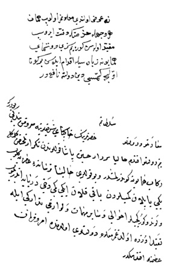

Belge 25: TKSA: E. 2457/19, veziriâzam ‘arzı
Belge 25
Özet:
1. Girit’ten serdâr Hüseyin Paşa’dan telhîs gelmiş
2. Tersanede yapılan gemilere kürekçi alınacak.
H. H. Kösem Sultan’ın (?) emri:
“Donanma-yi Hümâyûn için ziyâdesi” ile çaba harcanması.